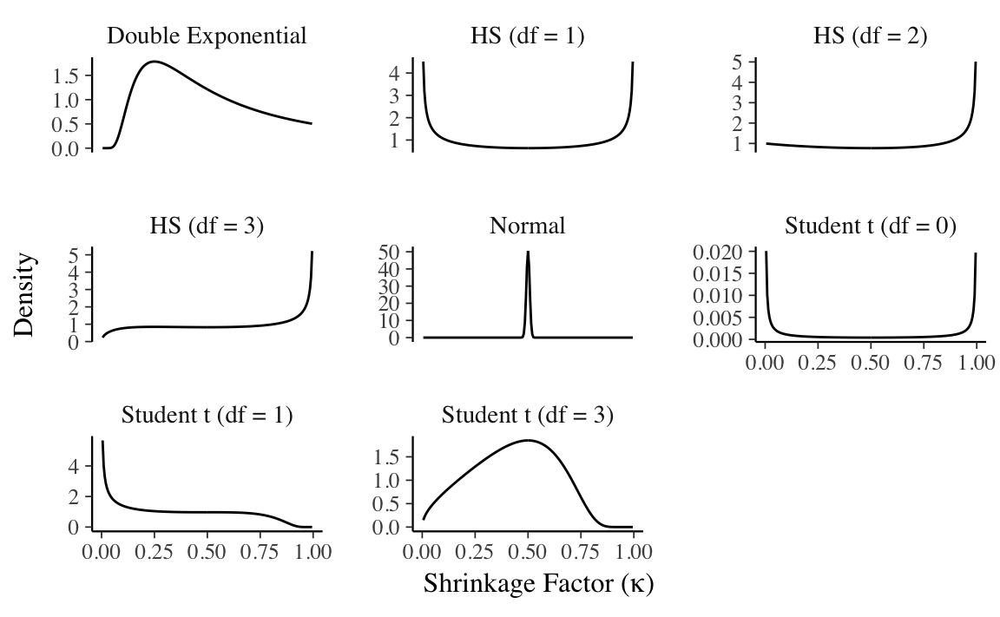

19 Shrinkage and Regularized Regression
Prerequisites
19.1 Introduction
Shrinkage estimation deliberately introduces biases into the model to improve overall performance, often at the cost of individual estimates (Efron and Hastie 2016, 91).
This is opposed to MLE, which produces unbiased estimates (asymptotically, given certain regularity conditions). Likewise, the Bayesian estimates with non- or weakly-informative priors will produce estimates similar to the MLE. With shrinkage, the priors are used to produce estimates different than the MLE case.
Regularization describes any method that reduces variability in high dimensional estimation or prediction problems (Efron and Hastie 2016).
19.2 Penalized Maximum Likelihood Regression
OLS finds the \(\beta\) that minimize the in-sample sum of squared errors, \[ \hat{\beta}_{\text{OLS}} = \arg\min_{\beta} \sum_{i = 1}^n (\vec{x}_i\T \vec{\beta} - y_i)^2 \]
Penalized regressions add a penalty term increasing in the magnitude of \(\beta\) to the minimization function. \[ \hat{\beta}_{\text{penalized}} = \argmin_{\beta} \sum_{i = 1}^n (\vec{x}_i\T \vec{\beta} - y_i)^2 + \underbrace{f(\beta)}_{\text{shrinkage penalty}}, \] where \(f\) is some sort of penalty function on \(\beta\) that penalizes larger (in magnitude) values of \(\beta\).
Penalized regression purposefully introduces bias into the regression in order to reduce variance and improve out-of-sample prediction. The penalty term, when chosen by cross-validation or an approximation thereof, allows for trading off bias and variance.
Different penalized regression methods use different choices of \(f(\beta)\), The two most commonly penalty functions are Ridge and Lasso.
19.2.1 Ridge Regression
Ridge regression uses the following penalty (Hoerl and Kennard 1970): \[ \hat{\beta}_{\text{ridge}} = \arg\min_{\beta} \underbrace{\sum_{i = 1}^n (\vec{x}_i\T \vec{\beta} - y_i)^2}_{\text{RSS}} + \underbrace{\lambda}_{\text{tuning parameter}} \underbrace{\sum_{k} \beta_k^2}_{\ell_2 \text{ norm}^2} \] The \(\ell_2\) norm of \(\beta\) is, \[ ||\beta||_{2} = \sqrt{\sum_{k = 1}^K \beta_k^2} . \]
The ridge regression coefficients are smaller in magnitude than the OLS coefficients, \(|\hat{\beta}_{ridge}| < |\hat{\beta}_{OLS}|\). However, this bias in the coefficients can be offset by a lower variance, better MSE, and better out-of-sample performance than the OLS estimates.
Unlike many other penalized regression estimators, ridge regression has a close-form solution. The expected value and variance-covariance matrix of the ridge regression coefficients is, \[ \begin{aligned}[t] \E[\hat{\beta}_{\text{ridge}}] &= M y \\ \Var[\hat{\beta}_{\text{ridge}}] &= \sigma^2 M' M \\ M &= (X' X + \lambda I)^{-1} X' . \end{aligned} \]
Some implications:
\(\hat{\vec{\beta}}\) exists even if \(\hat{\vec{\beta}}_{\text{OLS}}\) (\((\mat{X}\T\mat{X})^{-1}\)), i.e. cases of \(n > p\) and collinearity, does not exist.
If \(\mat{X}\) is orthogonal (mean 0, unit variance, zero correlation), \(\mat{X}\T \mat{X} = n \mat{I}_p\) then \[ \hat{\vec{\beta}}_{\text{ridge}} = \frac{n}{n + \lambda} \hat{\vec{\beta}}_{\text{ols}} \] meaning, \[ |\hat{\vec{\beta}}_{\text{ols}}| > |\hat{\vec{\beta}}_{\text{ridge}}| \geq 0 \]
Ridge does not produce sparse estimates, since \((n / (n + \lambda)) \vec{\vec{\beta}}_{ols} = 0\) iff \(\vec{\vec{\beta}}_{ols} = 0\)
If \(\lambda = 0\), then the ridge coefficients are the same as the OLS coefficients, \(\lambda \to 0 \Rightarrow \hat{beta}_{\text{ridge}} \to \hat{beta}_{OLS}\)
As \(\lambda\) increases the coefficients are shrunk to 0, \(\lambda \to \infty \Rightarrow \hat{\beta}_{\text{ridge}} = 0\).
19.2.2 Lasso
The lasso (Least Absolute Shrinkage and Selection Operator) uses an \(\ell_1\) norm of \(\beta\) as a penalty (Tibshirani 1996), \[ \hat{\beta}_{\text{lasso}} = \arg\min_{\beta} \frac{1}{2 \sigma} \sum_{i = 1}^n (\vec{x}_i\T \vec{\beta} - y_i)^2 + \lambda \sum_{k} |\beta_k| \] where \(\lambda \geq 0\) is a tuning or shrinkage parameter chosen by cross-validation or a plug-in statistic.
The \(\ell_1\) norm of \(\beta\) is the sum of the absolute values of its elements, \[ ||\beta||_{1} = \sum_{k = 1}^K |\beta_k| . \]
Properties:
Unlike ridge regression, it sets some coefficients exactly to 0, producing sparse solutions.
If variables are perfectly correlated, there is no unique solution (unlike the ridge regression).
Used as the best convex approximation of the “best subset selection” regression problem, which finds the number of nonzero entries in a vector.
Unlike ridge regression, there is no closed-form solution. Since \(|\beta_k|\) does not have a derivative, it was a more difficult iterative problem than many other regression functions. However, now there are several algorithms to estimate it.
19.2.3 Constrained Optimization Interpretation
19.2.4 Bayesian Interpretation
The penalty term in regressions can generally be interpreted a prior on the coefficients. Recall that although OLS does not require normal errors, the OLS coefficients are equivalent to the MLE of a probability model with normal errors, \[ \begin{aligned} \hat{\beta}_{MLE} &= \arg \max_{\beta} \dnorm(y | x \beta, \sigma) \\ & = \arg \max_{\beta} {(2 \pi \sigma^2)}^{n / 2} \prod_{i = 1}^{n} \exp\left(-\frac{(y_i - x_i' \beta)^2}{2 \sigma^2}\right) \\ &= \arg \max_{\beta} \frac{n}{2} (\log 2 + \log \pi) + n \log \sigma + \sum_{i = 1}^{n} \left( -\frac{(y_i - x_i' \beta)^2}{2 \sigma^2} \right) \\ & = \arg \max_{\beta} \sum_{i = 1}^{n} - (y_i - x'_i \beta)^2 \\ &= \arg \min_{\beta} \sum_{i = 1} (y_i - x'_i \beta)^2 \\ &= \hat{\beta}_{OLS} \end{aligned} \] Likewise the shrinkage prior can be represented as a normal distribution with mean 0 and scale \(1 / \lambda\), since the \(\beta\) that maximize the probability of that, minimize the \(\ell_2\) norm of \(\beta\), \[ \begin{aligned} \arg \max_{\beta} \dnorm(\beta | 0, \tau) &= \arg \max_{\beta} {(2 \pi \sigma^2)}^{K / 2} \prod_{k = 1}^{K} \exp\left(- \frac{(0 - \beta_k)^2}{2 \tau^2} \right) \\ &= \arg \max_{\beta} \sum_{k = 1}^{K} \left(-\frac{\beta_k^2}{2 \tau^2}\right) \\ &= \arg \min_{\beta} \frac{1}{2 \tau^2} \sum_{k = 1}^K \beta_k^2 \end{aligned} \] where \(\tau^2 = 1 / 2 \lambda\).
Thus ridge regression can be thought of as a MAP estimator of the model \[ \begin{aligned}[t] y_i &\sim \dnorm(\alpha + x' \beta, \sigma) \\ \beta_k &\sim \dnorm(0, (2 \lambda)^{-1/2} ) \end{aligned} \] Similarly, the \(\beta\) that minimize the \(\ell_1\) norm also maximize the probability of random variables iid from the Laplace distribution, \(\dlaplace(\beta_k | 0, 1 / \lambda)\). \[ \begin{aligned} \arg \max_{\beta} \dlaplace(\beta | 0, 1 / \lambda) &= \arg \max_{\beta} \left(\frac{\lambda}{2}\right)^{K} \prod_{k = 1}^{K} \exp\left(- \lambda |0 - \beta_k)| \right) \\ &= \arg \max_{\beta} \sum_{k = 1}^{K} - \lambda |\beta_k| \\ &= \arg \min_{\beta} \lambda \sum_{k = 1}^K |\beta_k| \end{aligned} \] Thus lasso regression can be thought of as a MAP estimator of the model, \[ \begin{aligned}[t] y_i &\sim \dnorm(\alpha + x' \beta, \sigma) \\ \beta_k &\sim \dlaplace(0, 1 / \lambda) \end{aligned} \]
19.3 Bayesian Shrinkage
Consider the single output linear Gaussian regression model with several input variables, given by \[ \begin{aligned}[t] y_i \sim \dnorm(\vec{x}_i' \vec{\beta}, \sigma^2) \end{aligned} \] where \(\vec{x}\) is a \(k\)-vector of predictors, and \(\vec{\beta}\) are the coefficients.
What priors do we put on \(\beta\)?
Improper priors: \(\beta_k \propto 1\) This produces the equivalent of MLE estimates.
Non-informative priors: These are priors which have such wide variance that they have little influence on the posterior, e.g. \(\beta_k \sim \dnorm(0, 1e6)\). The primary reason for these (as opposed to simply using an improper prior) is that some MCMC methods, e.g. Gibbs sampling as used in JAGS or BUGS, require proper prior distributions for all parameters.
Shrinkage priors have a few characteristics
they push \(\beta_k \to 0\)
while in the other cases, the scale of the prior on \(\beta\) is fixed, in shrinkage priors there is often a hyperprior on it, e.g., \(\beta_k \sim \dnorm(0, \tau)\), where \(\tau\) is also a parameter to be estimated.
19.3.1 Priors
Consider the regression: \[ y_i \sim \dnorm(\alpha + x_i' \beta, \sigma) \]
It is assumed that the outcome and predictor variables are standardized such that \[ \begin{aligned}[t] \E[y_i] &= 0 & \V[y_i] &= 1 \\ \E[x_i] &= 0 & \V[x_i] &= 1. \end{aligned} \] Then, the default weakly informative priors are, \[ \begin{aligned}[t] \alpha &\sim \dnorm(0, 10) \\ \beta_k &\sim \dnorm(0, 2.5) & k \in \{1, \dots, K\} \end{aligned} \]
The weakly informative priors will shrink all the coefficients towards zero.
The amount of shrinkage depends on the amount of data as the likelihood dominates the prior as the amount of data increases. However, the amount of shrinkage is not estimated from the data. The prior on each coefficient is independent, and its scale is a constant (2.5 in this example).
Regularization/shrinkage methods estimate the amount of shrinkage. The scale of the priors on the coefficients are hyperparameters, which are estimated from the data.
19.3.2 Spike and Slab prior
\[ \begin{aligned}[t] \beta_k | \lambda_k, c, \epsilon &\sim \lambda_k N(0, c^2) + (1 - \lambda_j) N(0, \epsilon^2) \\ \lambda_k &\sim \dbern(\pi) \end{aligned} \]
In the case of the linear regression, an alternative to BMA is to use a spike-and-slab prior (Mitchell and Beauchamp 1988, @GeorgeMcCulloch1993a, @IshwaranRao2005a), which is a prior that is a discrete mixture of a point mass at 0 and a non-informative distribution.
The spike and slab prior is a “two-group” solution. \[ p(\beta_k) = (1 - w) \delta_0 + w \pi(\beta_k) \] where \(\delta_0\) is a Dirac delta function putting a point mass at 0, and \(\pi(\beta_k)\) is an uninformative distribution, e.g. \(\pi(\beta_k) = \dnorm(\beta_k | 0, \sigma^2)\) where \(\sigma\) is large.
The posterior distribution of \(w\) is the probability that \(\beta_k \neq 0\), and the conditional posterior distribution \(p(\beta_k | y, w = 1)\) is the distribution of \(\beta_k\) given that \(\beta_k \neq 0\).
See the R package spikeslab and he accompanying article (Ishwaran, Kogalur, and Rao 2010) for an implementation and review of spike-and-slab regressions.
19.3.3 Normal Distribution
We can apply a normal prior to each \(\beta_k\). Unlike the weakly informative priors, the prior distributions all share a scale parameter \(\tau\). \[ \beta_k | \tau \sim \dnorm(0, \tau) \] We need to assign a prior to \(\tau\).
In MAP estimation this is often set to be an improper uniform distribution. Since in the weakly informative prior, \(\beta_k \sim \dnorm(0, 2.5\) for all \(k\), a prior on \(\tau\) in which the central tendency is the same as the weakly informative prior makes sense. One such prior is \[ \tau \sim \dexp(2.5) \] TODO: look for better guidance for the prior of \(\tau\).
- This is equivalent to Ridge regression.
- Unlike most shrinkage estimators, there is a closed form solution to the posterior distribution
19.3.4 Laplace Distribution
We can also use the Laplace distribution as a prior for the coefficients. This is called Bayesian Lasso, because the MAP estimator of this model is equivalent to the Lasso estimator.
The prior distribution for each coefficient \(\beta_k\) is a Laplace (or double exponential) distribution with scale parameter (\(\tau\)). \[ \beta_k | \tau \sim \dlaplace(0, \tau) \] Like many priors that have been proposed and used for coefficient shrinkage, this can be represented as a local-global scale-mixture of normal distributions. \[ \begin{aligned} \beta_k | \tau &\sim \dnorm(0, \tau \lambda_k) \\ \lambda_k^{-2} &\sim \dexp(1/2) \end{aligned} \] The global scale \(\tau\) determines the overall amount of shrinkage. The local scales, \(\lambda_1, \dots, \lambda_K\), allow the amount of shrinkage to vary among coefficients.
19.3.5 Student-t and Cauchy Distributions
We can also use the Student-t distribution as a prior for the coefficients. The Cauchy distribution is a special case of the Student t distribution where the degrees of freedom is zero.
The prior distribution for each coefficient \(\beta_k\) is a Student-t distribution with degrees of freedom \(\nu\), location 0, and scale \(\tau\), \[ \beta_k | \tau \sim \dt(\nu, 0, \tau) . \] Like many priors that have been proposed and used for coefficient shrinkage, this can be represented as a local-global scale-mixture of normal distributions. \[ \begin{aligned} \beta_k | \tau, \lambda &\sim \dnorm(0, \tau \lambda_k) \\ \lambda_k^{-2} &\sim \dgamma(\nu/2, \nu/2) \end{aligned} \]
The degrees of freedom parameter \(\nu\) can be fixed to a particular value or estimated. If fixed, then common values are 1 for a Cauchy distribution, 2 to ensure that there is a finite mean, 3 to ensure that there is a finite variance, and 4 ensure that there is a finite kurtosis.
If estimated, then the \[ \nu \sim \dgamma(2, 0.1) \] Additionally, it may be useful to truncate the values of \(\nu\) to be greater than 2 to ensure a finite variance of the Student t distribution.
19.3.6 Horseshore Prior
The Horseshoe prior is defined solely in terms of a global-local mixture. \[ \begin{aligned} \beta_k | \tau, \lambda &\sim \dnorm(0, \tau \lambda_k) \\ \lambda_k &\sim \dhalfcauchy(1) \end{aligned} \]
The Hierarchical Shrinkage prior originally implemented in rstanarm and proposed by … replaces the half-Cauchy prior on \(\lambda_k\) with a half-Student-t distribution with degrees of freedom \(\nu\). \[ \lambda_k \sim \dt(\nu, 0, 1) \] The \(\nu\) parameter is generally not estimated and fixed to a low value, with \(\nu = 4\) being suggested. The problem with estimating the Horseshoe prior is that the wide tails of the Cauchy prior produced a posterior distribution with problematic geometry that was hard to sample. Increasing the degrees of freedom helped to regularize the posterior. The downside of this method is that by increasing the degrees of freedom of the Student-t distribution it would also shrink large parameters, which the Horseshoe prior was designed to avoid.
Regularized horseshoe prior \[ \begin{aligned} \beta_k | \tau, \lambda &\sim \dnorm(0, \tau \tilde{\lambda}_k) \\ \tilde{\lambda}^2_k &= \frac{c^2 \lambda^2}{c^2 + \lambda^2} \\ \lambda_k &\sim \dhalfcauchy(1) \end{aligned} \] where \(c > 0\) is a constant. Like using a Student-t distribution, this regularizes the posterior distribution of a Horseshoe prior. However, it is less problematic in terms of shrinking large coefficients.
Since there is little information about \(c\), \(c\) is treated as a parameter, and a prior is placed on it. \[ c \sim \dt(0, s^2) \]
19.4 Understanding Shrinkage Models
Suppose that \(X\) is a \(n \times K\) matrix of predictors, and \(y\) is a \(n \times 1\) vector of outcomes. The conditional posterior for \(\beta\) given \((X, y)\) is \[ \begin{aligned}[t] p(\beta | \Lambda, \tau, \sigma^2, D) &= \dnorm(\beta | \bar{\beta}, \Sigma), \\ \bar{\beta} &= \tau^2 \Lambda (\tau^2 \Lambda + \sigma^2 (X'X)^{-1})^{-1} \hat{\beta}, \\ \Sigma &= (\tau^{-2} \Lambda^{-1} + \frac{1}{\sigma^{2}} X'X)^{-1}, \\ \Lambda &= \diag(\lambda_1^{2}, \dots, \lambda^{2}_D), \\ \hat{\beta} &= (X'X)^{-1} X'y . \end{aligned} \] If the predictors are uncorrelated with zero mean and variances \(\Var(x_k) = s_k^2\), then \[ X'X \approx n \diag(s_1^2, \dots, s^2_K) , \] and we can use the approximations, \[ \bar{\beta}_k = (1 - \kappa_k) \hat{\beta}_k, \\ \kappa_k = \frac{1}{1 + n \sigma^{-2} \tau^2 s_k^2 \lambda_k^2} . \] The value \(\kappa_k\) is called the shrinkage factor for coefficient \(\beta_k\). When \(\kappa_k = 0\), then there is no shrinkage and the posterior coefficient is the same as the MLE solution, \(\bar{\beta} = \hat{\beta}\). When \(\kappa_k = 1\), then there is complete shrinkage and the posterior coefficient is zero, \(\bar{\beta} = 0\). It also follows that \(\bar{\beta} \to 0\) as \(\tau \to 0\), and \(\bar{\beta} \to \hat{\beta}\) as \(\tau \to \infty\).
19.5 Choice of Hyperparameter on \(\tau\)
The value of \(\tau\) and the choice of its hyper-parameter has a big influence on the sparsity of the coefficients.
Piironen and Vehtari (2017) treat the prior on \(\tau\) as the implied prior on the number of effective parameters. The shrinkage can be understood as its influence on the number of effective parameters, \(m_{eff}\), \[ m_{\text{eff}} = \sum_{j = 1}^K (1 - \kappa_j) . \] This is a measure of effective model size.
Piironen and Vehtari (2017) show that for a given \(n\) (data standard deviation), \(\tau\), \(\lambda_k\), and \(\sigma\), the and variance of \(m_{eff}\) \[ \begin{aligned}[t] \E[m_{eff} | \tau, \sigma] &= \frac{\sigma^{-1} \tau \sqrt{n}}{1 + \sigma^{-1} \tau \sqrt{n}} K , \\ \Var[m_{eff} | \tau, \sigma] &= \frac{\sigma^{-1} \tau \sqrt{n}}{2 (1 + \sigma^{-1} \tau \sqrt{n})2} K . \end{aligned} \]
Given a prior guess about the sparsity \(\beta\), a prior should be chosen such that it places mass near that guess. Let \(k_0 \in [0, K]\) be the expected number of non-zero elements of \(\beta\), then choose \(\tau_0\) such that \[ \tau_0 = \frac{k_0}{K - k_0}\frac{\sigma}{\sqrt{n}} \]
This prior depends on the expected sparsity of the solution, which depends on the problem. PiironenVehtari2017a provide no guidence on how to select \(p_0\). Perhaps a simpler model, e.g. lasso could be used to estimate \(p_0\).
- Datta and Ghosh (2013) warn against empirical Bayes estimators of \(\tau\) for the horseshoe prior as it can collapse to 0.
- Scott and Berger (2010) consider marginal maximum likelihood estimates of \(\tau\). –>
- Pas, Kleijn, and Vaart (2014) suggest that an empirical Bayes estimator truncated below at \(1 / n\).

19.6 Differences between Bayesian and Penalized ML
\[ \log p(\theta|y, x) \propto \frac{1}{2 \sigma} \sum_{i = 1}^n (\vec{x}_i\T \vec{\beta} - y_i)^2 + \lambda \sum_{k} \beta_k^2 \] In the first case, the log density of a normal distribution is, \[ \log p(y | \mu, x) \propto \frac{1}{2 \sigma} (x - \mu)^2 \] The first regression term is the produce of normal distributions (sum of their log probabilities), \[ y_i \sim \dnorm(\vec{x}_i\T \vec{\beta}, \sigma) \] The second term, \(\lambda \sum_{k} \beta_k^2\) is also the sum of the log of densities of i.i.d. normal densities, with mean 0, and scale \(\tau = 1 / 2 \lambda\), \[ \beta_k \sim \dnorm(0, \tau^2) \]
The only difference in the LASSO is the penalty term, which uses an absolute value penalty for \(\beta_k\). That term corresponds to a sum of log densities of i.i.d. double exponential (Laplace) distributions. The double exponential distribution density is similar to a normal distribution, \[ \log p(y | \mu, \sigma) \propto - \frac{|y - \mu|}{\sigma} \] So the LASSO penalty is equivalent to the log density of a double exponential distribution with location \(0\), and scale \(1 / \lambda\). \[ \beta_k \sim \dlaplace(0, \tau) \]
There are several differences between Bayesian approaches to shrinkage and penalized ML approaches.
The point estimates:
- ML: mode
- Bayesian: posterior mean (or median)
In Lasso
- ML: the mode produces exact zeros and sparsity
- Bayesian: posterior mean is not sparse (zero)
Choosing the shrinkage penalty:
- ML: cross-validation
- Bayesian: a prior is placed on the shrinkage penalty, and it is estimated as part of the posterior.
19.7 Examples
Prerequisites
19.8 Parameters
| Category | Description |
|---|---|
| modeled data | Data, assigned distribution |
| unmodeled data | Data not given a distribution |
| modeled parameters | Parameters with an informative prior distribution |
| unmodeled parameters | Parameters with non-informative prior distribution |
| derived quantities | Variables defined deterministicically |
See A. Gelman and Hill (2007, 366)
19.9 Miscellaneous Mathematical Background
19.9.1 Location-Scale Families
In a location-scale family of distributions, if the random variable \(X\) is distributed with mean 0 and standard deviation 1, then the random variable \(Y\), \[ Y = \mu + \sigma X , \] has mean \(\mu\) and standard deviation \(\sigma\).
Normal distribution: Suppose \(X \sim \dnorm(0, 1)\), then \[ Y = \mu + \sigma X, \] is equivalent to \(Y \sim \dnorm(\mu, \sigma)\) (normal with mean \(\mu\) and standard deviation \(\sigma\)).
** Student-t distribution** (including Cauchy): \[ \begin{aligned}[t] X &\sim \dt{\nu}(0, 1) \\ Y &= \mu + \sigma X \end{aligned} \] implies \[ Y \sim \dt{\nu}(\mu, \sigma), \] i.e. \(Y\) is distributed Student-\(t\) with location \(\mu\) and scale \(\sigma\).
In Stan, it can be useful parameterize distributions in terms of a mean 0, scale 1 parameters, and separate parameters for the locations and scales. E.g. with normal distributions,
parameters {
real mu;
real<lower = 0.0> sigma;
vector[n] eps;
}
transformed parameters {
vector[n] y;
y = mu + sigma * eps;
}
model {
eps ~ normal(0.0, 1.0);
}19.9.2 Scale Mixtures of Normal Distributions
Some commonly used distributions can be represented as scale mixtures of normal distributions. For formal details of scale mixtures of normal distributions see West (1987). Distributions that are scale-mixtures of normal distributions can be written as, \[ Y \sim \dnorm(\mu, \sigma_i^2) \\ \sigma_i \sim \pi(\sigma_i) \] As its name suggests, the individual variances (scales) themselves, have a distribution.
Some examples:
- Student-t
- Double Exponential
- Horseshoe or Hierarchical Shrinkage (HS)
- Horseshoe Plus or Hierarchical Shrinkage Plus (HS+)
Even when analytic forms of the distribution are available, representing them as scale mixtures of normal distributions may be convenient in modeling. In particular, it may allow for drawing samples from the distribution easily. And in HMC, it may induce a more tractable posterior density.
19.9.3 Covariance-Correlation Matrix Decomposition
The suggested method for modeling covariance matrices in Stan is the separation strategy which decomposes a covariance matrix \(\Sigma\) can be decomposed into a standard deviation vector \(\sigma\), and a correlation matrix \(R\) (Barnard, McCulloch, and Meng 2000), \[ \Sigma = \diag(\sigma) R \diag(\sigma) . \] This is useful for setting priors on covariance because separate priors can be set for the scales of the variables via \(\sigma\), and the correlation between them, via \(R\).
The rstanarm decov prior goes further and decomposes the covariance matrix into a correlation matrix, \(\mat{R}\),
a diagonal variance matrix \(\mat{\Omega}\) with trace \(n \sigma^2\), a scalar global variance \(\sigma^2\), and a simplex \(\vec{\pi}\) (proportion of total variance for each variable):
\[
\begin{aligned}[t]
\mat{\Sigma} &= \mat{\Omega} \mat{R} \\
\diag(\mat{\Omega}) &= n \vec{\pi} \sigma^2
\end{aligned}
\]
Separate and interpretable priors can be put on \(\mat{R}\), \(\vec{\pi}\), and \(\sigma^2\).
The LKJ (Lewandowski, ) distribution is a distribution over correlation coefficients, \[ R \sim \dlkjcorr(\eta) , \] where \[ \dlkjcorr(\Sigma | \eta) \propto \det(\Sigma)^{(\eta - 1)} . \]
This distribution has the following properties:
- \(\eta = 1\): uniform correlations
- \(\eta \to \infty\): approaches the identity matrix
- \(0 < \eta < 1\): there is a trough at the identity matrix with higher probabilities placed on non-zero correlations.
- For all positive \(\eta\) (\(\eta > 0\)), \(\E(R) = \mat{I}\).
lkjcorr_df <- function(eta, n = 2) {
out <- as.data.frame(rlkjcorr(n, eta))
out$.row <- seq_len(nrow(out))
out <- gather(out, .col, value, -.row)
out$.col <- as.integer(str_replace(out$.col, "^V", ""))
out$eta <- eta
out
}
lkjsims <- purrr::map_df(c(0.01, 0.1, 1, 2, 50, 1000), lkjcorr_df, n = 50)This simulates a single matrix from the LKJ distribution with different values of \(\eta\). As \(\eta \to \infty\), the off-diagonal correlations tend towards 0, and the correlation matrix to the identity matrix.
ggplot(lkjsims,
aes(x = .row, y = .col, fill = value)) +
facet_wrap(~ eta, ncol = 2) +
scale_fill_distiller(limits = c(-1, 1), type = "div", palette = "RdYlBu") +
geom_raster() +
theme_minimal() +
theme(panel.grid = element_blank(), axis.text = element_blank()) +
labs(x = "", y = "")
The density of the off-diagonal correlations.

For other discussions of the LKJ correlation distribution, see these:
19.9.4 QR Factorization
For a full-rank \(N \times K\) matrix, the QR factorization is \[ \mat{X} = \mat{Q} \mat{R} \] where \(\mat{Q}\) is an orthonormal matrix such that \(\mat{Q}\T \mat{Q}\) and \(\mat{R}\) is an upper triangular matrix.
Stan function Stan Development Team (2016) suggest writing it is \[ \begin{aligned}[t] \mat{Q}^* = \mat{Q} \times \sqrt{N - 1} \\ \mat{R}^* = \frac{1}{\sqrt{N - 1}} \mat{R} \end{aligned} \]
This is used for solving linear model.
Suppose \(\vec{\beta}\) is a \(K \times 1\) vector, then \[ \vec{eta} = \mat{x} \vec{\beta} = \mat{Q} \mat{R} \vec{\beta} = \mat{Q}^* \mat{R}^* \vec{\beta} . \] Suppose \(\mat{theta} = \mat{R}^* \vec{\beta}\), then \(\vec{eta} = \mat{Q}^* \mat{\theta}\) and \(\vec{beta} = {\mat{R}^*}^{-1} \mat{\theta}\).
rstanarm provides a prior for a normal linear model which uses the QR decomposition to parameterize a prior in terms of \(R^2\).
Stan functions:
qr_Q(matrix A)qr_R(matrix A)
See Stan Development Team (2016 Sec 8.2)
19.9.5 Cholesky Decomposition
The Cholesky decomposition of a positive definite matrix \(A\) is, \[ \mat{A} = \mat{L} \mat{L}\T , \] where \(\mat{L}\) is a lower-triangular matrix.
- It is similar to a square root for a matrix.
It often more numerically stable or efficient to work with the Cholesky decomposition, than with a covariance matrix. When working with the covariance matrix, numerical precision can result in a non positive definite matrix. However, working with \(\mat{L}\) will ensure that \(\mat{A} = \mat{L} \mat{L}\T\) will be positive definite.
In Stan
- Types types
cholesky_factor_cov, andcholesky_factor_corrrepresent the Cholesky factor of covariance and correlation matrices, respectively. - Cholesky decomposition function is
cholesky_decompose(matrix A)
- Types types
Multiple functions in Stan are parameterized with Cholesky decompositions instead of or in addition to covariance matrices. Use them if possible; they are more numerically stable.
lkj_corr_chol_lpdfmulti_normal_cholesky_lpdf
The Cholesky factor is used for sampling from a multivariate normal distribution using i.i.d. standard normal distributions. Suppose \(X_1, \dots, X_N\) are \(N\) i.i.d. standard normal distributions, \(\mat{\Omega}\) is an \(N \times N\) lower-triangular matrix such that \(\mat{\Omega} \mat{Omega}\T = \mat{\Sigma}\), and \(\mu\) is an \(N \times 1\) vector, then \[ \vec{\mu} + \mat{\Omega} X \sim \dnorm(\vec{\mu}, \mat{\Sigma}) \]
See Stan Development Team (2016, 40, 147, 241, 246)
19.10 Scaled and Unscaled Variables
Though priors shouldn’t depend on the data itself, many priors depends
Suppose \(\tilde{Y}\), \(\tilde{X}\), \(\tilde{\alpha}\), \(\tilde{\beta}\), and \(\epsilon\) are random variables, such that \[ \tilde{Y} = \tilde{\alpha} + \tilde{\beta} \tilde{X} + \epsilon . \] These random variables have the following properties, \[ \begin{aligned}[t] \tilde{Y} &= \frac{Y - \bar{Y}}{\sigma_Y}, & \E[\tilde{Y}] &= 0, & \sigma_Y^2 &= \Var[\tilde{Y}] = 1 \\ \tilde{X} &= \frac{X - \bar{X}}{\sigma_X}, & \E[\tilde{X}] &= 0, & \sigma_X^2 &= \Var[\tilde{X}] = 1 , \\ && \E[\epsilon] &= 0 & \sigma_{\tilde{\epsilon}}^2 &= \Var[\tilde{\epsilon}] \end{aligned} \] where \[ \begin{aligned}[t] \bar{X} &= \E[X] , & s_X^2 &= \Var[X] , \\ \bar{Y} &= \E[Y] , & s_Y^2 &= \Var[Y] . \end{aligned} \]
Then via some algebra, \[ \begin{aligned} Y &= \underbrace{\sigma_{Y} \tilde{\alpha} + \bar{Y} - \frac{\sigma_Y }{\sigma_X} \tilde{\beta} \bar{X}}_{\alpha} + \underbrace{\frac{\sigma_Y}{\sigma_X} \tilde{\beta}}_{\beta} X + \underbrace{\sigma_Y \tilde{\epsilon}}_{\epsilon} \\ &= \alpha + \beta X + \epsilon . \end{aligned} \] The primary relationships of interest are those between \(\alpha\) and \(\tilde{\alpha}\), \(\beta\) and \(\tilde{\beta}\), and \(\epsilon\) and \(\tilde{\epsilon}\). These can be used to convert between coefficients estimated with standardized data to the coefficients on the data scale, or to adjust scale-free weakly informative priors to the data scale. \[ \begin{aligned}[t] \tilde{\alpha} &= \sigma_Y^{-1}\left(\alpha - \bar{Y} + \beta \bar{X} \right) \\ &= \sigma_Y^{-1}\left(\alpha - \bar{Y} + \frac{\sigma_Y}{\sigma_X} \tilde{\beta} \bar{X} \right), \\ \alpha &= \sigma_Y \tilde{\alpha} + \bar{Y} - \frac{\sigma_Y}{\sigma_X} \tilde{\beta} \bar{X} \\ &= \sigma_Y \tilde{\alpha} + \bar{Y} - \beta \bar{X} , \\ \tilde{\beta} &= \frac{\sigma_X}{\sigma_Y} \beta , \\ \beta &= \frac{\sigma_Y}{\sigma_X} \tilde{\beta} , \\ \tilde{\epsilon} &= \epsilon / \sigma_Y , \\ \epsilon &= \sigma_Y \tilde{\epsilon} . \end{aligned} \] This implies the following relationships between their means and variances, \[ \begin{aligned}[t] E(\alpha) &= \sigma_{Y} E(\tilde{\alpha}) + \bar{Y} - \frac{\sigma_Y}{\sigma_X} E(\tilde{\beta}) \bar{X} , & V(\alpha) &= \sigma_{Y}^2 V(\tilde{\alpha}) + \frac{\sigma_Y^2}{\sigma_X^2} V(\tilde{\beta}) \bar{X}^2 , \\ &= \sigma_{Y} E(\tilde{\alpha}) + \bar{Y} - \bar{X} E(\beta) , & &= \sigma_{Y}^2 V(\tilde{\alpha}) + \bar{X}^2 V(\beta) , \\ E(\tilde{\alpha}) &= \frac{E(\alpha) - \bar{Y} + E(\beta) \bar{X} }{\sigma_Y} , & V(\tilde{\alpha}) &= \sigma_Y^{-2} \left[ V(\alpha) + \bar{X}^2 V(\beta) \right] \end{aligned} \] For example, a weakly informative prior on \(\tilde{\alpha}\) implies a prior on \(\alpha\), \[ \tilde{\alpha} \sim N(0, 10^2) \to \alpha \sim N \left( \frac{\beta \bar{X} - \bar{Y}}{\sigma_Y}, \sigma_Y^2 10^2 \right) . \]
\[ \begin{aligned}[t] E(\beta) &= \frac{\sigma_Y}{\sigma_X} E(\tilde{\beta}) , & V(\beta) &= \frac{\sigma_Y^2}{\sigma_X^2} V(\tilde{\beta}) , \\ E(\tilde{\beta}) &= \frac{\sigma_X}{\sigma_Y} E(\beta) , & V(\tilde{\beta}) &= \frac{\sigma_X^2}{\sigma_Y^2} V(\beta) . \end{aligned} \]
For example, a weakly informative prior on \(\tilde{\beta}\) implies the following prior on \(\beta\), \[ \tilde{\beta} \sim N(0, 2.5^2) \to \beta \sim N\left(0, \frac{\sigma_Y^2}{\sigma_X^2} 2.5^2 \right) . \]
\[ \begin{aligned}[t] E(\epsilon) &= 0 , & V(\epsilon) &= \sigma_Y^2 V(\tilde{\epsilon}), \\ E(\tilde{\epsilon}) &= 0 , & V(\tilde{\epsilon}) &= \sigma_Y^{-2} V(\epsilon) . \end{aligned} \] For example, a weakly informative prior on the variance of \(\tilde{\epsilon}\) implies a weakly informative prior on the variance of \(\epsilon\), \[ \sigma_{\tilde{\epsilon}} \sim C^{+}\left(0, 5 \right) \to \sigma_{\epsilon} \sim C^{+}\left(0, 5 \sigma_Y \right) . \]